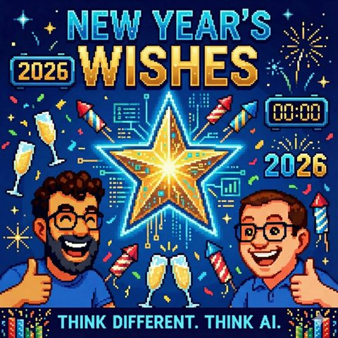

New Year's wishes
Read in EnglishThemen RobotikInterfaces und Interaktion
33 Sekunden zur Folge, bevor du liest.
Worum es geht
Smart Glasses, Robotik und Agentic Networks: Unsere KI-Wünsche für 2026
Was wünschen sich zwei KI-Podcaster fürs neue Jahr? Keine neuen Modelle, die kommen sowieso. Mark und Jens nutzen die erste Folge des Jahres für einen unaufgeregten Ausblick auf 2026: von Smart Glasses über neue Interaktionsmuster bis zu Robotik und Agentic Networks.
Wunsch Nummer eins: Voice-First-Interfaces und Smart Glasses als neuer Formfaktor. Mark hat sich bereits eine smarte Brille vorbestellt und erklärt, warum ihm die Vorstellung gefällt, mit KI über andere Kanäle als den klassischen Bildschirm zu interagieren: multimodal, gesprächsbasiert, immer verfügbar, weg von klobigen VR-Headsets wie Oculus oder der Apple Vision Pro. Wie multimodal KI schon heute sein kann, zeigt für ihn NotebookLM, das aus Textquellen spontan ganze Gesprächs-Podcasts erzeugt. Jens ergänzt das mit einem sehr konkreten Wunsch an Designer und Engineers: KI-Antworten brauchen neue Interaktionsmuster für Wartezeiten, gerade wenn eine Anfrage bewusst länger dauern darf, weil die KI recherchiert oder nachdenkt. Stichwort kontextbewusstes, "always-on"-Verhalten, ohne dabei zur Datenschutz-Falle zu werden.
An dieser Stelle kommt auch der EU AI Act ins Spiel: Ab Mitte 2026 greifen weitere Pflichten, Unternehmen müssen nachvollziehbar erklären können, wie ihre Agenten handeln. Mark und Jens sehen das nicht als Bremse, sondern als Chance für gut gestaltete, vertrauenswürdige Systeme, inklusive eines Ausblicks auf das Zusammenspiel von kleinen, lokal laufenden Modellen (On-Device) und großen Cloud-Modellen.
Wunsch Nummer zwei betrifft Robotik. Ausgangspunkt ist ein viral gegangenes Video von Tesla Optimus, bei dem ein humanoider Roboter während einer Live-Vorführung umfällt, ein Hinweis darauf, wie viel bei aktuellen Humanoiden noch Teleoperation statt echter Autonomie ist. Auch der ferngesteuerte Roboter "Neo" und Anbieter wie Figure AI werden eingeordnet, ebenso Apples früheres Forschungsprojekt einer beweglichen Pixar-Lampe als Gegenentwurf zum humanoiden Hype. Für den deutschen Haushalt erwarten beide 2026 noch keine echten humanoiden Roboter, wohl aber weitere Fortschritte im industriellen Umfeld.
Der dritte Wunsch ist der vielleicht persönlichste: Jens will 2026 keine Workflows mehr bauen müssen, sondern Probleme einfach schildern und die KI den Rest erledigen lassen, inklusive selbstständig orchestrierten Multi-Agenten-Setups. Mark stimmt zu und bringt die zentrale These der Folge: 2026 wird das Jahr, in dem der Shift von "Mensch interagiert mit einer KI" zu "KI interagiert selbstständig mit anderen KIs" spürbar wird, ausgelöst durch MCP-Server, Standard-APIs und Agenten, die sich bei Bedarf sogar eigene Schnittstellen bauen.
Kein Wunsch nach einem neuen Modell also, sondern nach besseren Schnittstellen zwischen Mensch, Maschine und den vielen Maschinen untereinander, garniert mit der Hoffnung auf smarte Brillen, anständige Roboter und ein Jahr, das (anders als einst für 2000 prophezeit) definitiv nicht untergeht.
Transkript
00:00:00Willkommen bei Think Different, Think AI, dem Podcast von Mark und Jens.
00:00:07Zwei technologieverliebte Köpfe, die nicht nur über künstliche Intelligenz reden, sondern sie leben.
00:00:14Hier gibt es klare Einordnungen, echte Praxiseinblicke und einen frischen Blick auf das, was möglich ist.
00:00:20Verständlich, kritisch und immer mit einem Augenzwinkern.
00:00:24KI zum Nachdenken, zum Schmunzeln und vor allem zum Mitreden.
00:00:29Herzlich willkommen bei Think Different, Think AI.
00:00:37Die Weihnachtszeit, sie ist vorbei.
00:00:40Was ich reimt, ist gut.
00:00:42Weihnachten war hoffentlich für euch alle ein besinnliches, beschauliches Fest gewesen
00:00:47im Umfeld der Leben oder wo auch immer ihr zugegen wart.
00:00:52zu vergessen, bitte auch nicht die Menschen, die ja einen Tagewerk nachgegangen sind in dieser Zeit,
00:01:00möchte man ja auch mal, ich sage mal, entsprechend würdigen, weil gerade sowas wie
00:01:05Zeisenenergieversorgung, im Gesundheitssystem, Polizei oder sonstige, die ich jetzt hier sicherlich
00:01:11nicht alle aufzählen kann, möchte ich doch einfach an der Stelle auch mal ein Dankes sagen.
00:01:16Mit mir dabei ist der Jens, der die Weihnachtszeit scheinbar auch gut überstanden hat, oder Jens?
00:01:23Ist alles okay gewesen?
00:01:24Ja, ja, alles gut. Wie immer lecker gegessen. Viel Spaß gehabt.
00:01:28Ein bisschen durch die Gegend gefahren, aber alles überschaubar.
00:01:31Und ich ließe gerade so ein bisschen die arbeitsfreie Zeit zwischen den Jahren.
00:01:36Dann kann mich ein bisschen umtun.
00:01:38Bastel, ein paar Sachen rum, probiere die ein oder andere KI aus.
00:01:42Ich freue mich so ein bisschen auf das, was im nächsten Jahr kommen wird, weil seitdem
00:01:49wir den Podcast gemacht haben, ist es irgendwie angefangen haben im Sommer 25, ist die Geschwindigkeit
00:01:56in dem neue KI-Tools, Neuerungen bei den Modellen und so etwas aufpoppen, hat es noch mal zugelegt.
00:02:01Also wenn die alle wollen, dass wir noch mehr Content haben, über den wir berichten
00:02:06können, Mark, habe ich manchmal das Gefühl, und dem spreche ich auch deswegen sehr.
00:02:09Ja, ja, ich glaube, die machen alles nur, damit wir beide ausreichend Sachen zum Rumspielen haben und zum
00:02:15Drohwer berichten und zu erzählen. Das hat freue ich mich, wie Bolle auf das Jahr 2026,
00:02:21das in ein paar Tagen losgeht. Ja, wir hatten uns ja überlegt, dass wir die
00:02:25heutige Folge dafür nutzen wollen, uns mal zu überlegen, was wünschen wir uns 2026?
00:02:31Und ich sage mal, was wir jetzt an dieser Stelle, ich hoffe, ich überrasche jetzt niemanden und
00:02:35ich hoffe ich enttäuscht dich jetzt nicht. Also ich werde mir jetzt nicht ein GPT6 oder ein Nano
00:02:41Banana 5 wünschen, weil ich gehe mal davon aus, das kommt eh. Ich würde heute mal in meine Wunschkiste
00:02:48etwas legen, wo ich ziemlich sicher bin, dass wir es kriegen werden, weil es etwas näher liegender
00:02:54ist, nämlich das ganze Thema der Voice First, der neuen Formfaktoren, der Smart Classes. Also
00:03:03Warum sage ich näher ins Kästchen legen? Ich war mal so frei und habe mir von dieser
00:03:08Even Realities G2-Brille bestellt, auch wenn sie jetzt nicht mehr in 2025 kommt, so dass
00:03:15wahrscheinlich erst in 2026 zu mehr ausgeliefert wird. Da bin ich mir
00:03:19ziemlich sicher, dass wir an der Stelle nächstes Jahr einiges erleben werden,
00:03:24was die immer gegenwärtige Auswertung deiner Umgebung beziehungsweise. Die
00:03:31hat ja keine Kameras, die immer gegenwärtige Verfügbarkeit von KI in Form von Wearables
00:03:38wie zum Beispiel Brillen. Ben haltet. Ja, das glaube ich sehr und ich hoffe es auch, dass
00:03:44sowas kommen wird, denn sind wir beide auch Brillenträger, also irgendeiner als Add-on,
00:03:48die jetzt nicht so klobig ist wie so eine Oculus oder Apple Brille, die ich jetzt irgendwie
00:03:53tragen muss, um da so ein VR-Gefühl zu haben. Das finde ich schon ein bisschen nice,
00:03:58dass ich sage, wir kommen so ein bisschen weg von, ich kann mit der Welt nur interagieren, indem ich
00:04:04irgendwie eine Art Screen, also der digitalen Welt irgendwie interagiere, indem ich irgendwie eine
00:04:08Art Screen vor mir in den Schreibtisch schätze oder in meiner Hand halte, in der Form eines
00:04:12Telephones, das würde ich mir sehr wünschen. Und da ist natürlich mit KI, glaube ich, sehr, sehr
00:04:17viel möglich, weil die KI ein Teil des Interfaces halt wegnehmen kann. Also brauchen
00:04:23um ein gewisse Buttons klicken und irgendwas anderes. Die KI kann die Informationen für
00:04:28mich in meiner Kontext-Situation so aufbereiten, wie ich es dann brauche. Weil wir werden auch
00:04:34in so eine multimodale Welt reingehen. Es wird nicht mehr ein Text sein, es ist Video, es ist Ton,
00:04:37ich kann mit der KI gut reden, sie kann mich gut verstehen, sie kann, wir haben ja notebook.lm,
00:04:43häufig schon mal erwähnt, sie kann tolle Podcasts machen, sie kann Geschichten spannend
00:04:46erzählen für mich als Erwachsene, für mich als Kind irgendwas anderes. Also ich glaube,
00:04:51werden so unterschiedliche Interaktionsmöglichkeiten kommen, die weit über das normale, ich habe
00:04:59einen zweidimensionalen Screen vor mir in der Hand und trage dir die ganze Zeit die Gegend und
00:05:04musst dir irgendwie hochreißen, wenn ich irgendwelche Informationen haben will. Ich würde mir sehr
00:05:08erhoffen, dass KI da anderen Eingabemöglichkeiten, anderen Ausgabemöglichkeiten wirklich ein
00:05:14Boost verschafft in dem nächsten Jahr. Das war da die einen oder anderen Geräte sehen,
00:05:18die wahrscheinlich so smarte Brillen sein werden, vielleicht aber auch was ganz anders.
00:05:22Vielleicht ist es auch mal irgendwie, ich benutze ja alle wahrscheinlich Kopfhörer,
00:05:27manchmal ist das schon sehr angenehm, wenn ich auch mal eine KI auf dem Kopf im Ohr habe
00:05:32und mit der ein bisschen unterhalte werde, nicht wo ich draußen spazieren gehe oder sowas.
00:05:36Das ist schon netter, als wenn ich durch die Gegend laufen muss und die ganze Zeit aufs
00:05:39Handy gucke und dann im Park über den Aststolper. Das passiert jetzt dann selten.
00:05:44Und wenn hast du ja ein Wearable, das dann um Hilfe ruft, damit du entsprechend versorgt
00:05:49wirst, wo ja auch KI zumindest mal drin ist.
00:05:52Aber ich glaube auch, dass das Text immer mehr nur noch ein Kanal von vielen ist, mit
00:05:59dem wir dann interagieren werden und dass dieses ganze Visuelle, sei es Video, sei
00:06:03es Audio oder was auch immer in alle Richtungen, dass man es kombinieren kann, interagieren
00:06:10kann, erhalten kann, dass es immer gegenwärtiger wird und dann zum Beispiel in Brillen oder
00:06:17sonst wo eine Rolle spielt.
00:06:19Was da, wenn ich jetzt im Hinblick beim Wünschen bin, dann bin ich da in die Richtung geht
00:06:25es an die Engineers und die Designer da draußen, ich habe das glaube ich schon mal erwähnt.
00:06:30Ich erwarte, dass wir nach und nach, das prägt sich jetzt schon so ein bisschen
00:06:33aus und neues, Interaktionspattern sich wieder ausprägt, also dieses, was man früher
00:06:37noch kannte, weil alles langsam war, weil das Modem hatte nur die 56k Verbindung und man musste
00:06:43im Prinzip ein bisschen Wartezeit überbrücken, bis die Webseite geladen ist. Das kennen wir
00:06:47alles nicht mehr. Unsere Welt war jetzt die letzten Jahre davon geprägt, die letzten Jahrzehnte
00:06:52davon geprägt, dass ich das klicke, das Video sofort holte, die Webseite direkt geladen ist.
00:06:56Wir haben es alles auf die Mikrosekunde optimiert, damit die Conversion auch hoch ist. Man
00:07:01wusste, wenn der Kunde nachdem er von Google auf seine Webseite gekommen ist, die Webseite
00:07:06der nicht sofort geladen hat, dann springt er auch schnell wieder ab. Das ist diese
00:07:12performance-optivierte Welt, in der wir sind. Jetzt, durch das Thema KI, weil es nicht mehr dieser
00:07:17Click ist, den ich mit der KI mache, sondern ich führe eine eine Konversation, ob die durch
00:07:23Klicken ist oder durch echte Sprache ist oder durch Texteingabe in dem Moment ist. Auf diese
00:07:29Konversation gibt es eine gewisse Art Reaktion, die manchmal auch einfach bewusst länger dauern darf,
00:07:35weil ich dann auch einfach der KI sage, denk erstmal drüber nach,
00:07:38such erstmal, oder die KI kommt selber darauf,
00:07:41dass es ein bisschen dauert, ne?
00:07:43Du hast ja auch Workforce beschrieben, die du gerne hatte ich aber benutzt,
00:07:45in anderen Folgen schon, wo es darum geht,
00:07:47dass dann vielleicht auch Mädel-KIs miteinander interagieren
00:07:49und hinterher mit dem optimalen Ergebnis kommen.
00:07:51Jetzt zu meinem wunschlangen Rede
00:07:53an die Designer und die Engineers draußen.
00:07:56Wir brauchen etwas, glaube ich,
00:07:58und wir müssen da rum experimentieren,
00:08:00wie dieses Pattern auch wieder funktionieren kann,
00:08:02Jetzt mal dieser hypothetische Gang durch den Park, während ich gerade mit meiner KI rede, die
00:08:09Beauftrage, eine gewisse Anfrage jetzt zu erfüllen und dann dauert es jetzt mal hypothetisch vielleicht
00:08:1540 Sekunden. Währenddessen kommt derjenige Mark mehr entgegen und ich möchte natürlich nicht,
00:08:20dass die KI jetzt dann auch einfach los plappert, während Mark dann vor mir steht,
00:08:24sondern auch da müssen wir solche Sachen entwickeln, wie wenn sie dann fertig ist,
00:08:28muss ich noch mal fragen. Ich habe das Ergebnis jetzt zusammengestellt, möchte es jetzt hören,
00:08:34möchte ich dir das schicken, möchte es jetzt irgendwie dir durchlesen auf deinem Telefon.
00:08:39Das ist nicht immer so, es darf nicht so sein, wie es bisher ist, dass ich sage, ich habe jetzt
00:08:44einen Klick gemacht, ich habe eine Interaktion gehabt oder ich habe eine Aktion gesetzt,
00:08:48einen Träger gesetzt und jetzt kommt irgendwann halt dann wir nicht sofort in der nächsten
00:08:52Sekunde, sondern halt ein halben Tag später plötzlich das Ding, als wenn es halt genauso
00:08:56funktioniert, als wenn ich es irgendwie in der nächsten Sekunde erwartet habe.
00:08:59Weißt du, das ist etwas anderes. Also diese Wartezeit, die muss mit ihrem Ende
00:09:03bewusst gestaltet werden, meiner Meinung nach.
00:09:05Ich habe da so ein, das ist wahrscheinlich jedem schon passiert und hat wahrscheinlich
00:09:09jeder schon erlebt. Du sitzt in einem Meeting, in einem Gespräch, in einem netten
00:09:13Beisammensein und irgendwie ist es ein bisschen langweilig oder keine Ahnung
00:09:16warst und du machst kurz ein Handy auf und in dem Moment öffnest du deinen
00:09:20Browser und dir fällt ein, dass du deinen Browser vorher verlassen hast
00:09:23während ein Video lief. Dein Gehirn ist dann in der Sekunde sehr schnell, weil du hast
00:09:28schon geklickt, dass sie rauseröffnet, sich und quackt in einer vollen Lautstärke los und
00:09:33alle drehen sich um. Ja, also so etwas sollte nicht passieren und ich glaube nicht, dass
00:09:37die KI dich in Zukunft fragen wird. Ich würde mir wünschen, dass die KI durchaus sich
00:09:41aber bewusst ist, ob es jetzt eine gute Idee ist, dir das, was sie herausgefunden
00:09:47hat, jetzt zu sagen, weil gerade Frau Kind, Kollege, was auch immer entgegen kam
00:09:53oder das Telefon klingelt oder Postbote klingelt und du jetzt nicht das Gedicht
00:09:56weiterhören willst oder irgendwas und das sich auch dort kontext-aware verhält.
00:10:02Definitiv für diese Kontext-Erwärmung, das müssen wir uns klar sein, da brauchst
00:10:05sie natürlich auch so eine always-on Geschichte, weil sie muss natürlich
00:10:08theoretisch wahrnehmen, was um uns zu passieren. Aus einer Usability-Perspektive
00:10:11wäre es perfekt, wenn sie natürlich dadurch, dass ich dann mit dir rede,
00:10:15also Hallo Mark sage, na, dir schon ein Zuwinker oder irgendwas anderes,
00:10:19dass ich da, dass sie dadurch mitkriegt, dass ich jetzt in einem anderen Interaktionspattern,
00:10:24das nicht mehr mit ihr zu 200 stecke, und dann, dass sie dann rausfiltert und darauf
00:10:28wieder wartet, bis zu dem Moment, okay, ich kann meinem Anwender jetzt wieder sagen, hier,
00:10:33ich hab das Ergebnis, weil anscheinend ist das, sprich, mit dem Markt vorbei oder ich
00:10:36kriege eine kleine Vibration in den Palmen, also dass sie wirklich dann kontextsensitiv
00:10:40dann reagiert und dass die Interaktion so gestaltet, dass ich weiß, okay, die
00:10:44Arbeitungspase ist zu Ende. Ich kann also nachdem Mark mich dann im Park voll gelabert hat.
00:10:49Kann ich dann das Gespräch mit meiner Liebenkai dann danach weiterführen, weil sie ist schon
00:10:57mit dem Ergebnis parat, sobald das Gespräch mit Mark zu Ende ist. Und ich glaube so was,
00:11:02jetzt ist natürlich auch so eine Darkenschutzperspektive und alles, was wir jetzt hier irgendwie
00:11:05umdenken, alles nicht so einfach und schwierig in dem Moment, aber ich glaube solche Sachen
00:11:11müssen sich ausbrechen. Mit all dem Beiberg, was dann kommen muss, das ist natürlich das Gespräch,
00:11:15das ich mit Mark führe, definitiv nicht aufgenommen werden kann, während ich quasi
00:11:19mein Mikrofon offen hatte, damit die KI mit mir interagieren kann. Das muss direkt wieder
00:11:22gelöscht werden. Alle solche Sachen müssen eigentlich von vornherein, und da bin ich wieder
00:11:27froh, dass wir in der Europäischen Union leben, von vornherein mit reingestaltet werden.
00:11:31Und das ist der Vorteil von dem EU-Akt auch, der im nächsten Jahr auch, das ist
00:11:36Das ist im Fall auch so ein Ding für 2026, da alle diese Sachen, die im EU-AI-Act festgelegt sind,
00:11:43die greifen auch 26. Ich glaube, da ist diese Schonzeit auch vorbei.
00:11:46Ab Mitte 26 müssen auch alle Sachen nachvollziehbar sein.
00:11:49Ich muss als Unternehmen erklären können, wie Agenten eigentlich da handeln.
00:11:53Und dementsprechend, ist das ein gutes Ding, dass wir das Teil haben?
00:11:56Und ich glaube, wenn Unternehmen, Designer, Engineers das hier in Europa richtig machen,
00:12:01dann kann man auch die Anwendung so gestalten, dass sie eine hohe Nutzbarkeit haben.
00:12:05Trotzdem eben auch das Thema Privacy macht.
00:12:08Ich glaube, in der Schule kommt doch das, was wir auch schon mal erwähnt hatten,
00:12:12das ganze Thema der kleinen Modelle auch noch mal zum Tragen.
00:12:15Nicht die eine große künstliche Intelligenz, die quasi alle Sensoren bei sich vereinheitlicht.
00:12:21Und dann, je nachdem, wie der Tänzen sind, irgendwo im Rechenzentrum entscheidet,
00:12:25was er dir auf der Brille, auf dem Lautspreis und so ausspielt.
00:12:28So dass das auch ein sehr gutes Zusammenspiel ist zwischen, was findet On-Device-Stat,
00:12:33Was finde Trimaut statt? Wo ist es ein Zusammenspiel der Systeme, um Informationsflüsse,
00:12:39Dareichungen und Ähnliches zu bedienen?
00:12:42Bevor wir jetzt auf den UI-Act, der kam gar nicht auf meiner Wunschliste vor, der ist schön,
00:12:46dass er da ist und ich freue mich auch sehr in der EU zu sein.
00:12:49Es gibt genügend Länder, die irgendwie, ich weiß,
00:12:53das möchte ich nicht, ob ich nächstes Jahr mal in die Staaten komme,
00:12:56weil ich bin mir gar nicht über meinen DNA-Status sicher, aber es ist ein anderes Thema.
00:13:00Wir sind ja kein Politikpodcast.
00:13:02Ich würde noch mal auf die Wünsche zurückkommen und auch etwas, was gefühlt greifbarer ist,
00:13:06wo auch USA und China, aber auch Deutschland eine Rolle spielen, nämlich Robotik.
00:13:10Ja, Robotik, zu sagen auch, wenn jetzt der Neo, der vorgestellt wurde, ja mit Remote
00:13:17Control arbeitet, also Teleportation eines Menschen, der mit Brille und Controller dann
00:13:22bei dir die Dienste verrichtet, fand ich übrigens auch ganz bloß, die Weiche,
00:13:26ob du es gesehen hast, Tesla hat ja auch so ein Event gehabt, der humanoide Roboter
00:13:30Optimus zu sehen und der hat eine Bewegung ausgeführt und man sieht in diesem Video
00:13:35wie der eine Bewegung ausgeführt hat und was umschmeißt, wie die Hände hoch zu seinem Kopf
00:13:39gehen, als ob er eine Brille absetzen würde, die er aufhat und nachdem er die abgesetzt hat,
00:13:44die er ja nicht aufhat, fällt da um. Man hat also wirklich das Gefühl ein Operator hat das
00:13:49Ding quasi aus der Entfernung bedient, die Brille während des Bedienens abgesetzt und in
00:13:54dem Moment fällt der Optimus auf diesem Event um. Ich hau das Video mal dann in die
00:13:59Show Notes. Aber wenn ich mir etwas wünschen dürfte, nicht das Lauteroptimus so umfallen,
00:14:05ich hätte ja total gerne ein Optimus. Aber es ist ein anderes Thema, dass wir wirklich mehr Robotik
00:14:10sehen. Sei es in Form von diesen Pixar-Lampen, die wir bei auch schon mal in der Folge erwähnt
00:14:15hatten, die Apple mal als dieses Labor hat oder halt wirklich in Form von etwas mehr als das,
00:14:22was heute hier bitte den Staubsauger Roboter deiner Wahl eintragen, durch die Wohnung fährt
00:14:27und die Fusse wegsaugt oder mittlerweile mit kleinen Greifärmchen deine Socken
00:14:31wegbringt. Das wird da vielleicht wirklich etwas Humanoides sehen. Das fände ich,
00:14:36das fände ich, das fände ich richtig cool. Finde ich, finde ich cool. Ich würde jetzt mal
00:14:39Orakeln in Deutschland haushalten, wirst du das massenhaft noch nicht sehen,
00:14:44Humanoide. Roboter in 2026. Also ich glaube in Spielzeugform von er vielleicht, ja,
00:14:50vielleicht so ein bisschen, wie gesagt, ich warte immer auf die coole, das coole R2D2 Roboter,
00:14:56Dinge, das hier durch die Gegend fährt und mit dem ich mich unterhalten könnte, das finde ich super.
00:14:59Ich glaube, solche Sachen kommen einfach. Du wirst vielleicht auch schon so etwas haben, wie der
00:15:07Staubsaber-Roboter, der dann auch per Sprache mit irgendwas anderem interagieren wird in deinem
00:15:12Haushalt. Solche Themen, wenn wir sehen, humanoider Roboter, ich glaube vor allem eher im
00:15:17industriellen Umfeld, dass man wirklich sagt, da sieht man, ob das jetzt bei Figures ist oder
00:15:24anderen Robotikfirmen, die da draußen sind, sieht man schon sehr, sehr gute Ansätze. Ich glaube,
00:15:28in solchen kontrollierten Umgebungen, wo dann auch mal in Anführungsstrichen wird sich hoffen,
00:15:35aber mal schief laufen darf. Da werden wir die sehen. Ich glaube, in deutschen Haushalten werden
00:15:42wir im nächsten Jahr auf jeden Fall noch nicht so viele Hume darüber. Darf man doch was wünschen?
00:15:46Darf man doch was wünschen? Darf man das wünschen? Aber ich glaube, ich würde jetzt erst mal sagen,
00:15:49normalerweise bin ich da ja auch immer sehr sehr optimistisch bei solchen Themen. Ich glaube
00:15:53noch nicht, dass wir die sehen werden. Also hier an dieser Stelle gehen Grüße an einen
00:15:57Reiner. Du kennst ihn nicht. Ich geh in der Schulzeit. Er sagt immer zu mir dicken Menschen
00:16:01am Bauch reiben. Ich mach es bei mir selbst. Wirkt Wunder. Von der Seite vielleicht hast
00:16:06hier das Wunder und dann ist das Reibenschuld gewesen. Vieler, vieler. Darf ich noch
00:16:11einen Wunsch äußern? Ja gerne. Ich hätte mich auch gewunden werden gesagt,
00:16:15jetzt nein, aber ich probiere es jetzt mal trotzdem. Du hast ja schon gesagt und
00:16:18der einen oder andere hat es in den vergangenen Folgen gehört, dass so was hier ändert, endet
00:16:21und so weiter, also Workflow-Automatisierung für mich hoch in Kurs ist. Wir haben aber
00:16:25auch ab und an überlovable und überkennbar bei Gemini und so gesprochen, wie man sich
00:16:30kleine Helferlein baut. Ich glaube, die vorletzte Folge war, dass wir den Rückblick gemacht
00:16:33hatten. Da wird ja auch ein paar Beispiele gebracht. Also ich wünsche mir für 26,
00:16:39dass das alles noch sehr viel einfacher wird. Auch wenn ich es mir Spaß mache,
00:16:43Workflows zu bauen, aber ich möchte eigentlich keine Workflows bauen, unten Frontend so anders
00:16:49Coden, nicht Coden, Vibe-Prompten, Vibe-Coding machen, das mir dann hoffentlich auch noch ein bisschen
00:16:55Backend zusammenknackert. Ich möchte eigentlich meinen Problem schildern, vielleicht mit der
00:16:59Maschine darüber diskutieren und noch komplexe Dinge umsetzen. Also Beispiel, ich möchte
00:17:06auch hier wieder etwas konkreter werden, du erinnerst dich vielleicht vor allen Dingen
00:17:09folgen, hatte ich mal von meinem Advisory Board gesprochen. Das war schon ein bisschen aufwändig
00:17:14zu sagen, okay, welche Agents brauche ich und wo kommen die Proms her? Und wie baue ich einen
00:17:19Agenten, der dann die Konversation zwischen von ihm ausgewählten Agenten zusammen baut? Und
00:17:25habe ich jetzt auch die eine oder andere Demo gesehen, dass man quasi durch Diskussionen,
00:17:32Systeme dazu bringen kann, das komplett autonom für mich herzustellen, sodass ich das eben
00:17:36nicht mehr selbst machen muss. Wenn das noch eins bei der Vielfalt weitergeht, dann ist das schon...
00:17:41Und da geht es bestimmt weiter.
00:17:44Ich denke auch. Also das ist so ein Ding, wo ich sagen würde, da bin ich voll bei dir.
00:17:48Ich glaube, 2026 wird das Jahr, wo wir wirklich diesen Shift von
00:17:53Mensch interagiert nur mit einer EI
00:17:57hin zu Mensch interagiert mit mehreren EIs.
00:18:01Das hast du ja schon über diese Workflow-Gethematiken auch in diesem Jahr schon gesehen.
00:18:05hin zu AIs, interagieren mit anderen AIs fast selbstständig aufgrund eines Auftrages, die ich hier vorher gegeben habe.
00:18:14Also da wird es eher darum gehen, auch gar nicht mehr hoffentlich, und das ist auch eine Hoffnung, aber ich glaube, das werden wir auch sehen.
00:18:21Ich muss unbedingt wissen, wie ich so ein Workflow aufsetze.
00:18:25Ich muss überhaupt wissen, dass es Workflows gibt. Weiß ich gar nicht.
00:18:28Ist vielleicht einfach gar nicht nötig, sondern das sollen die Dinge in einem Hintergrund machen.
00:18:32Das ist der Unterschied zwischen der IT 2.1.0 Geld und der IT 2.0 Geld, in dem wir uns gerade rein geben, dieses KI-Zeitalter.
00:18:40Dass diese Sachen, die soll nicht automatisch funktionieren. Ich glaube, wir werden da wirklich diesen Shift in diese Agentic-Netzwerke, von dem wir häufig geredet haben, sehen, dass ich sage,
00:18:49ich stoße
00:18:52oder rufe ins Horn oder blasen ins Horn meinen Wunsch, was ich für ein Output haben möchte.
00:18:57Und im Hintergrund kümmert sich ein magisches Netzwerk aus Agenten, die dann mit von mir aus MCP-Servern kommunizieren, Standard-APIs benutzen, selbstständig einen Browser benutzen, um Webseiten anzusurfen, die nicht da sind, sich vielleicht eigene APIs generieren, wenn sie sehen, ui, das ist ein repetitiver Task, den ich eben wieder durchführe.
00:19:21Da versuche ich doch dann im Prinzip etwas standardisiertes aufzubauen, damit ich nicht jedes Fall wieder erst aufs Neue das anfangen muss.
00:19:28All diese Mechaniken, die moderne IT, den Skill komplexe Systeme im Digital zur Verfügung stellen, jetzt noch sehr menschlich machen.
00:19:41Dass diese menschliche Komponente auch in den Hintergrund gedrängt wird und durch KI abgelöst werden kann.
00:19:47Weil das sind Sachen, die demokratisieren, dann die Macht, die IT mit sich bringt für
00:19:53noch viel, viel mehr Menschen draußen, die dann sinnvolle Sachen für sich bauen können.
00:19:57Und das darf sich nicht mehr so anfühlen wie dieses Jahr, aber ich möchte dann auch
00:20:00gerne ein Beispiel bringen.
00:20:01Ich habe jetzt kurz wieder in einem, ich glaube es war überhaupt mehr, in ChatGPT habe
00:20:06ich mir wieder einen täglichen News-Agenten gebaut, da hat mich wieder irgendwie drei
00:20:12Proms gekostet.
00:20:13Das finde ich zu viel.
00:20:14der letzte Prompt und deshalb sage ich das, der hat, der hat dann gefragt, soll ich das denn,
00:20:20du hast mir noch gar nicht gesagt, dass du das jetzt täglich haben willst und ehrlich,
00:20:24das habe ich am Anfang gemacht, in meinem ersten Prompt, dass ich wieder die täglichen News
00:20:28haben möchte und dann dachte ich so, gick ich den jetzt auch? Nein, du hast mir noch nicht
00:20:33den Befehl gegeben, dass ich jetzt wieder täglich zusammenstellen muss. Das sind so Sachen,
00:20:35oh, Mark, also wirklich, da muss ich sagen, nee, das ärgert mich und das will ich im nächsten
00:20:41nicht mehr haben. Wir klagen auf einem sehr hohen Niveau. Von einem Jahr hatten wir ganz andere Sorgen.
00:20:48Dann haben wir, als wir angefangen haben und uns überlegt haben, wo geht die Reise hin. Ich sage
00:20:53jetzt mal nicht, dass ihr also auf links gedreht habt, aber die Möglichkeiten der Systeme haben
00:20:57sich in 20, 25 durchaus ordentlich geändert. Wir wünschen uns jetzt etwas fürs nächste Jahr
00:21:04und ich bin echt gespannt, was wir dann auch nächstes Jahr in den ein oder anderen Folgen.
00:21:10Wir hatten ja schon das eine oder andere überlegt.
00:21:12Ich bin mal gespannt, ob wir noch eine EU-AI-Eckfolge machen.
00:21:15Mal gucken.
00:21:16Definitiv.
00:21:17Definitiv.
00:21:18Ja, okay.
00:21:19Gut, dann gucken wir mal, gucken wir mal da einladen.
00:21:20Wir hatten ja uns ja auch schon vor zwei Folgen auch schon überlegt, ne, nächstes
00:21:22Jahr mal auf eine Bühne, nächstes Jahr dann.
00:21:24Wo ja, das Projekt, an dem du ja gerade auch rumkrabbelst in deinen freien Tagen
00:21:28nochmal was zu hören.
00:21:29Aber ich würde sagen, Jens, die weihnachtliche Zeit ist rum, der Jahreswechsel steht
00:21:35an.
00:21:36Ich würde nicht zu viel versprechen, wenn ich sage, gemäss ich ja, wir hören
00:21:39uns nächstes Jahr wieder. Ich bin mir sicher, ihr hört uns nächstes Jahr wieder. Und damit
00:21:45auch ganz viele andere uns hören können, würde ich euch empfehlen, sagt Ihnen Bescheid, das
00:21:51ist Think Different, Think AI. Euer Begleiter ist auch in 2026 in einer vielleicht lockeren Form die
00:21:59Neuigkeiten zu erfahren, die uns alle sicherlich beeinflussen werden. Uns hat, wie gesagt,
00:22:06Ich bin 25, überrascht. Wenn es 26 durfte, ist wohl sicher, wird es uns wieder überraschen.
00:22:11Und damit würde ich sagen, Jens, ich wünsche dir einen schönen Jahreswechsel, komm gesund
00:22:17rüber, mach keinen Mist, ja, tue nichts, weil sie nicht auch tun würde.
00:22:22Niemals.
00:22:23Und Gottes Willen.
00:22:24Nein, das können wir nicht.
00:22:26Euch draußen auch alles Gute, komm gut ins neue Jahr und wir würden uns über jeden
00:22:33höherer Freuen, der uns erhalten bleibt und jeden, der dazukommt. Und damit bin ich jetzt
00:22:38fertig für heute. Wir geben noch vier zu eins zwei Worte an den Jens und sage tschüss bis
00:22:42nächstes Jahr.
00:22:44Vielen Dank, Mark. Ich kann mich auch nur anschließen. Es hat super Spaß gemacht, dieses
00:22:48erste gemeinsame Jahr unserer Podcast-Historie. Ich freue mich auf unser zweites Jahr
00:22:52in 26, euch draußen trotz der stürmischen Zeiten, die wir vielleicht manchmal erleben
00:22:58Und nicht nur der Themen, die sich auf der politischen Weltbühne abspielen, seht positiv ins neue
00:23:06Jahr rein.
00:23:07Wir beide glauben daran, dass KI uns bei vielen, vielen Sachen helfen wird.
00:23:10Denkt daran, wir haben 2026 jetzt schon bald.
00:23:13Der ein oder andere Elter von euch wird noch wissen, dass die Welt eigentlich im Jahr
00:23:182000 untergehen sollte.
00:23:19Das ist nicht passiert.
00:23:20Also bin ich auch guter Dinge, dass sie 2026 nicht untergehen wird.
00:23:24Wir freuen uns drauf.
00:23:25Das wird weder ein cooles Jahr, coole KI-Tools werden veröffentlicht werden, die werden
00:23:30uns an vielen Stellen Sachen weichtermachen.
00:23:33Es werden auch kritische Themen wieder aufkommen und die haben wir uns auch dieses Jahr schon
00:23:37angeguckt.
00:23:38Das sei versprochen.
00:23:39Wir werden also nicht immer nur alles mit einer rosa roten KI-Brille uns angucken, sondern
00:23:43wir werden auch mit einem anderen Thema auch im nächsten Jahr mal wieder kritisch
00:23:46das ein oder andere KI-Teo hinterfragen.
00:23:48Ich bin gespannt, ob wir tatsächlich echte KI-Weihnachtstady-Bern im nächsten Jahr
00:23:53unter den Weihnachtsbäumen in Deutschland sehen werden, die mit unseren Kindern reden. Ich bin mal
00:23:57positiv optimistisch, dass es da nette kleine Teddybären geben wird und R2-D2s geben wird und
00:24:06C3-POs, die vielleicht in Spielzeugform, da hast du dann ne Humanoiden, wenigstens ein bisschen
00:24:12durch die Gegend laufen und uns das Gefühl der Zukunft geben werden. Damit auf ins Neujahr.
00:24:19Genau. Rottguck gut reine. Bis dann. Tschau. Bis dann. Ciao.
00:24:49KI zum Nachdenken, zum Schmunzeln und vor allem zum Mitreden.